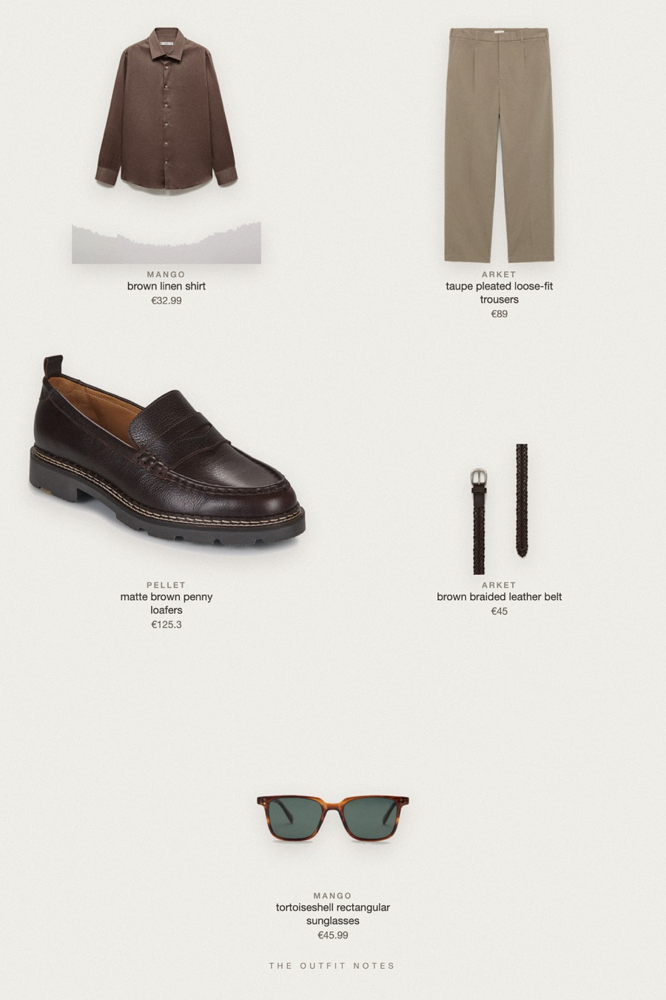
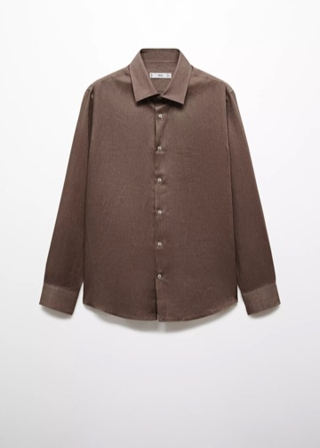

Brown Linen
tonal earth, light texture

Old money outfit men for a countryside weekend: a brown linen shirt with sleeves rolled, loose mole cotton trousers, braided belt and matte chocolate loafers. A tonal earth palette with one texture contrast. Mango linen shirt, ARKET Loose Fit Cotton Trousers, Pellet Milo, Mango tortoise sunglasses. Fall outfit men, quiet luxury.
The pieces
This page contains affiliate links: if you buy through them, we may earn a commission at no extra cost to you. Disclosure.

Mango
Brown linen shirt
Shop ARKET
ARKET
Taupe pleated loose-fit trousers
Shop Pellet
Pellet
Matte brown penny loafers
Shop ARKET
ARKET
Brown braided leather belt
Shop Mango
Mango
Tortoiseshell rectangular sunglasses
Shop
Prices are indicative, taken when the look was published, and may have changed. Pictures of the outfit are AI-generated illustrations of real products; the product photos are the retailers' own.
Published 1 October 2026.